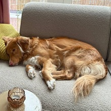

Mika the Snoozing Coworker Promoted at INCREC
 Mika, a Nova Scotia Duck Tolling Retriever, has become a beloved remote coworker at INCREC, where she works from home with her owner, Liset. Known for dozing off during video meetings or curling up in the background of Zoom calls, Mika’s frequent naps have officially earned her a promotion to Chief Comfort Officer (CCO). “Mika might not contribute much to the agenda, but her naps bring a sense of calm to every meeting,” Liset shared. As part of her new role, Mika’s main responsibility is boosting morale during stressful projects, often by simply being her adorable, sleepy self. At the time of this report, Mika was reportedly napping on the couch, proving once again why she’s perfect for the job.